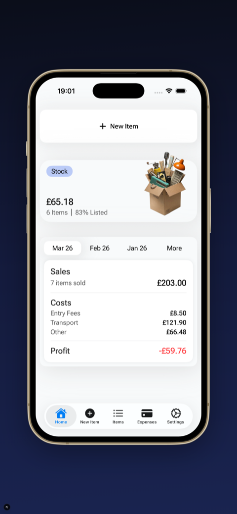
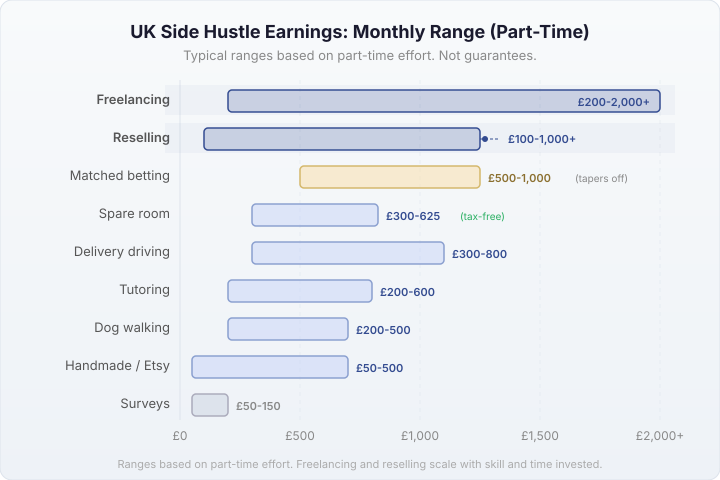

Last updated: 17 April 2026
Side Hustle Ideas UK 2026: What Actually Works
There are thousands of “side hustle ideas” articles online, and most of them list the same 30 things with no real detail. Here are the options that actually work in the UK for making extra money, with honest pros and cons for each.
Around 1.3 million people in the UK have a second job according to ONS data — about 3.8% of everyone in employment. Side hustles aren’t niche. But some options are genuinely worth your time and some aren’t. None of them will make you rich overnight.
1. Reselling (car boot sales, charity shops, eBay)
Buy items cheap at car boot sales, charity shops, Facebook Marketplace, or clearance sales. Sell them for more on eBay, Vinted, or Facebook Marketplace.
What you need to start: A smartphone, £50–100 to buy initial stock, and a free eBay/Vinted account.
The reality: Reselling works, but it’s not as easy as TikTok makes it look. You need to learn what sells, what doesn’t, and — critically — whether you’re actually making profit after postage, fees, entry fees, and travel costs. A lot of resellers think they’re making money when they’re not, because they don’t track all their costs properly.
Best for: People who enjoy hunting for bargains. Flexible hours — you source when you want and post when you want. Good for weekends (car boot sales are Saturday/Sunday mornings) or evenings (listing items).
Earning potential: Varies wildly. Some people make £100–200/month casually, others make £1,000+ with serious time investment. The key is knowing your numbers.
What real resellers say: On r/FlippingUK, a popular beginner thread started with someone who had £300 saved and wanted to get into flipping as a side hustle. The community’s advice: start with what you already own, then move to charity shops and car boot sales where you can buy branded items for £1–5 and sell for £15–30 on eBay or Vinted.
One r/sidehustle poster made about £15,000 in a year selling on Depop and Vinted, spending roughly an hour a day. That’s the upper end — they treated it as a near-full-time commitment with consistent sourcing and built up knowledge of which brands sell. Another has been flipping vintage band tees and Levi’s from thrift stores for two years through Facebook Marketplace, making steady side money from local sales.
A common concern: “I work a 9–5, how do I compete with full-timers?” Weekends are your friend. Car boot sales run Saturday and Sunday mornings, charity shops are open late on Saturdays, and listing items is an evening activity. You don’t need to be full-time to make it work.
If you’re interested, start with our beginner’s guide to selling on eBay UK and car boot sale buying tips. For what items actually sell, see best items to resell UK.

2. Freelancing your existing skills
If you have a skill that people pay for — writing, design, web development, accounting, marketing, translation — freelancing is one of the highest-paying side hustles.
Where to find work: Upwork, Fiverr, PeoplePerHour (UK-focused), or just reaching out to businesses directly. LinkedIn works surprisingly well for finding freelance clients.
Earning potential: Experienced freelancers charge £30–80/hour for skilled work (design, development, copywriting). Beginners on platforms like Fiverr and Upwork typically start lower (£10–20/hour) while building reviews and a portfolio. The hourly rate is usually much higher than other side hustles — but it’s not passive and you’re trading time for money.
Best for: People with professional skills who want to earn more outside their 9–5. Works well in evenings and weekends.
3. Delivery driving (Deliveroo, Uber Eats, Amazon Flex)
Sign up as a delivery driver with Deliveroo, Uber Eats, or Amazon Flex and get paid per delivery. You choose your own hours and work when you want.
What you need: A bicycle, scooter, or car. A smartphone. Right to work in the UK. For car deliveries, you may need commercial insurance.
The reality: The hourly rate looks decent on paper, but factor in petrol, insurance, vehicle wear, and the fact that you’re self-employed (so you pay your own National Insurance and tax), and the real hourly rate drops. Peak hours (Friday/Saturday evenings, lunch rush) pay better than quiet periods.
Best for: People who want reliable, immediate income. You can start earning within a week of signing up. Good if you have a car anyway and want to fill empty evenings.
4. Tutoring
If you’re good at a subject — maths, English, science, a musical instrument, a language — tutoring pays well and demand is consistent.
Where to find students: Tutorful, MyTutor, Superprof, or local Facebook groups. Online tutoring (Zoom/Teams) means you can teach from home.
The reality: Good tutors build up regular students and earn £20–50/hour depending on subject and level. GCSE and A-Level tutoring is in high demand, especially January–May. You don’t need a teaching qualification to tutor privately.
Best for: People with knowledge in academic subjects or skills. Consistent income once you build a client base. Works well for evenings and weekends.
5. Selling handmade or custom items
If you make things — jewellery, candles, prints, knitted items, woodwork — you can sell on Etsy, at craft markets, or through Instagram.
The reality: The craft market is competitive and margins can be tight once you factor in materials, time, and platform fees (Etsy charges 6.5% + listing fees). The people who do well usually have a niche — personalised items, for example — rather than competing on generic products.
Best for: People who already make things as a hobby and want to monetise it. Turns a cost (hobby supplies) into income.
6. Renting out a spare room
The UK government’s Rent a Room scheme lets you earn up to £7,500/year tax-free by renting out a furnished room in your home. That’s £625/month before you even think about tax.
Options: A lodger (long-term) or Airbnb (short-term, higher per-night but less consistent). Check your mortgage or lease terms first — some don’t allow subletting.
The reality: This is one of the most genuinely passive side hustles. The downside is having someone else in your home. Airbnb involves more work (cleaning, key exchange, guest management) but pays more per night.
Best for: Homeowners with a spare room who don’t mind sharing their space.
7. Dog walking and pet sitting
Platforms like Rover and Tailster connect you with pet owners who need dog walkers, pet sitters, or house sitters while they’re away.
The reality: Flexible and enjoyable if you like animals. Dog walking pays around £10–15 per 30-minute walk, and you can walk multiple dogs at once. Pet sitting (staying at someone’s home) can pay £20–40/night.
Best for: Dog lovers with flexible daytime hours. Good for people who work from home — fit in walks during lunch or between meetings.
8. Matched betting
Using free bet offers from bookmakers to guarantee a profit regardless of the outcome. Not gambling — it’s a mathematical approach to extracting value from promotional offers.
The reality: It works. The initial sign-up offers are the most profitable — many people make £500–1,000 from new customer offers alone. After that, ongoing offers (reload bets, price boosts) provide smaller but consistent income. Profit Accumulator and OddsMonkey are the main guides used in the UK.
The caveats: Bookmakers will eventually limit or close your accounts (called “gubbing”) — this is normal and expected. You need to follow instructions carefully; mistakes mean real money lost. And you need a float of £50–100+ to place the qualifying bets. It’s not gambling if you follow the process correctly, but it does require discipline.
Best for: People who are comfortable with numbers and following step-by-step instructions. Higher earning potential at the start, then tapers off as bookmaker offers dry up. Not technically an ongoing side hustle — more of a one-off income boost that can be very worthwhile.
9. Mystery shopping and market research
Companies pay people to visit shops, restaurants, or use services and report back on the experience. Market research panels pay for surveys and focus groups.
The reality: Mystery shopping doesn’t pay much (£5–15 per visit, sometimes just reimbursement), but focus groups pay well — £50–150 for a 1–2 hour session. Prolific is the best-paying survey platform for UK users. Don’t expect consistent income.
Best for: Extra pocket money. Good to combine with something else rather than relying on alone.
Side hustle comparison: earnings, costs, and time
Here’s a quick comparison to help you figure out which side hustle fits your situation. Earnings are rough ranges based on part-time effort — your results will depend on how much time you put in and how quickly you learn.
| Side Hustle | Typical Monthly | Startup Cost | Flexibility |
|---|---|---|---|
| Reselling | £100–1,000+ | £50–100 | High (weekends + evenings) |
| Freelancing | £200–2,000+ | £0 (existing skills) | High (set your own hours) |
| Delivery driving | £300–800 | Bicycle or car | Medium (peak hours pay more) |
| Tutoring | £200–600 | £0 | High (evenings + weekends) |
| Handmade / Etsy | £50–500 | £50–200 (materials) | High |
| Spare room | £300–625 | £0 | Very low effort |
| Dog walking | £200–500 | £0 | Medium (daytime hours) |
| Matched betting | £500–1,000 (tapers) | £50–100 float | High (online, any time) |
| Surveys / mystery shopping | £50–150 | £0 | High |
These are rough ranges, not guarantees. Freelancing and reselling have the highest ceilings because earnings scale with skill and time invested. Delivery driving and tutoring are more predictable. Mystery shopping is pocket money — good as a supplement, not as a main side hustle.

A note on tax
Side hustle income is taxable. The £1,000 trading allowance (see also our trading allowance guide) means you don’t need to report the first £1,000/year, but anything above that and you need to register for Self-Assessment with HMRC.
This applies to reselling, freelancing, tutoring, and most other self-employed income. Delivery driving platforms should provide you with income statements for your tax return.
Rent a Room has its own £7,500 tax-free threshold. Matched betting profits are not taxed (gambling winnings are tax-free in the UK).
Frequently asked questions
What is the best side hustle in the UK?
It depends on your skills and schedule. Reselling has low startup costs and flexible hours. Freelancing pays the most per hour if you have skills. Delivery driving is reliable and immediate. The best one is the one you’ll actually stick with.
How much can you make from a side hustle?
It varies widely. Based on what people report across reselling and side hustle communities, £200–500/month is a common range for part-time effort. Reselling and freelancing can go higher (£1,000+/month) with serious time investment and built-up skill. Delivery driving and tutoring are more predictable but have lower ceilings.
Do I need to pay tax on side hustle income?
If you earn over £1,000/year from self-employment (including side hustles), you need to register with HMRC for Self-Assessment. Below £1,000, the trading allowance covers it.
How do I make extra money in the UK?
The most accessible options are reselling (buy cheap, sell on eBay/Vinted), delivery driving, and freelancing. See the comparison table above for a quick overview of earnings, costs, and time commitment for each option.
Can I have a side hustle while working full-time?
Yes — most side hustles work around a full-time job. Check your employment contract for restrictive clauses, but most UK employers don’t prohibit side income as long as it doesn’t compete with your main role. Reselling, tutoring, and freelancing are particularly flexible around a 9–5.
About the author
I’m Oleksandr, the developer behind FlipperHelper. My wife resells as a side hustle — sourcing at car boot sales and charity shops, selling on eBay, Vinted, and Facebook Marketplace. I built the app to help her track costs and profits properly, because that’s where most resellers get tripped up. The reselling section of this guide draws directly from her experience and from what the UK reselling community shares on Reddit.
Starting with reselling? Track it from day one
Most resellers don’t know their real profit because they forget to track postage, entry fees, and travel. FlipperHelper tracks everything per item so you know exactly what’s working and what isn’t.
Download Free on the App StoreGet it Free on Google Play